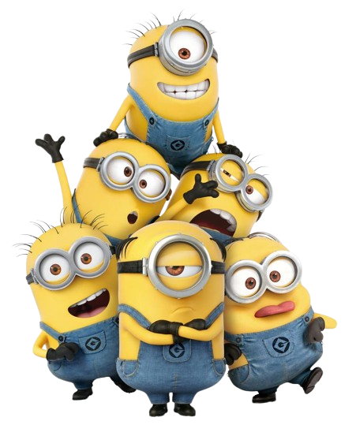

Info
Minions is a 2015 American animated comedy film produced by Universal Pictures and Illumination Entertainment, and distributed by Universal. The film is a prequel to Despicable Me (2010) and the third installment overall in the Despicable Me franchise. Directed by Pierre Coffin and Kyle Balda, produced by Chris Meledandri and Janet Healy, and written by Brian Lynch, Minions stars the voices of Coffin as the titular beings (including Kevin, Stuart, and Bob), Sandra Bullock, Jon Hamm, Michael Keaton, Allison Janney, Steve Coogan, Jennifer Saunders, and Geoffrey Rush as the narrator. In the film, the Minions search for their replaceable evil master after accidentally killing all of those in history.

Movie Poster
Minions debuted in London on June 11, 2015, and was released in the United States on July 10. It received mixed reviews from critics, who praised the animation, voice acting, and score, but criticized the character development and humor, which some called unfunny and inappropriate. Coffin has also expressed displeasure in the final film. The film grossed $1.159 billion worldwide, and became the fifth-highest-grossing film of 2015, the tenth-highest-grossing film of all time and the second-highest-grossing animated film of all time at its peak. It also became the highest-grossing film produced by Illumination until it was surpassed by The Super Mario Bros. Movie in 2023. A sequel, Minions: The Rise of Gru, was released in 2022 to similar success.